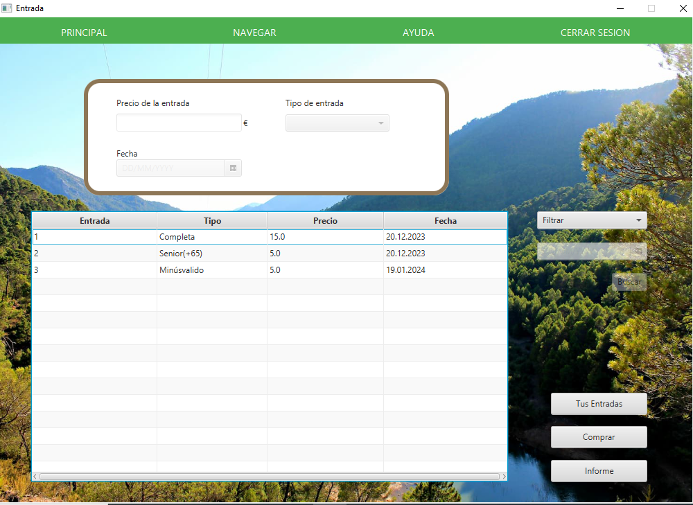

Bienvenido a la ventana de ayuda, elige que tipo de ayuda necesitas:
Ayuda Cliente
Fig 1: Ventana Entrada
Imágen de como se ve la ventana en modo Cliente, permite mirar las distintas entradas, comprarlas y mirar cuales han sido adquridas
Fig 2: Filtro por dinero

Si se pulsa "Filtrar" y se seleciona "Filtrar por dinero" se mostrará una caja de texto con un botón "buscar" en donde se puede introducir una cantidad númerica para buscar entradas que equivalgan dicho precio; vacia el campo y la tabla volverá a la normalidad
Fig 3: Filtro por fecha

Si se pulsa "Filtrar" y se seleciona "Filtrar por fecha" se mostrará un calendario con un botón "buscar" en donde se puede introducir una fecha para buscar entradas para la fecha selecionada, para volver a cargar la tabla vacia la fecha y pulsa enter para refrescar la tabla
Fig 4: Tus Entradas

Si se pulsa sobre "Tus entradas" podrás ver las entradas que has comprado, ten en cuenta que si no has comprado ninguna entrada se te indicará de tal mediante una ventana emergente
Fig 5: Ventana de compra

En esta aplicacion puedes comprar las distintas entradas que están disponibles, para ello primero debes seleccionar la entrada que deseas comprar, luego pulsa sobre "Comprar" para que te lleve a la ventana de confirmacion de compra, aqui introduces tus creedenciales de tu tarjeta bancaria, si los datos son correctos pulsa "Confirmar" para realizar la compra, una vez veas el mensaje de confirmacion puedes salir de esta ventana pulsando "Cancelar".
Fig 5.1: Ventana de confirmacion

Ejemplo de una compra realizada satisfactoriamente
Fig 5.2: Muestra compra

La entrada comprada podrá ser vista mediante el botón "Tus entradas" o pulsando Click derecho y seleccionando "Tus entradas" dentro de la tabla
Fig 6: Informe

Si se pulsa "Informe" se puede ver una versión más detallada de las entradas, la cual se puede guardar o imprimir a gusto
Ayuda Administrador
Fig 1: Ventana

Imágen de como se ve la ventana en modo Administrador, permite mirar las distintas entradas, crear, modificar y borrarlas
Fig 2: Crear entrada

Si rellenas los campos con datos validos y correctos, al pulsarle al botón crear se creará una nueva entrada
Fig 2.1: Datos erróneos

Muestra de un posible error al insertar datos en los campos disponibles
Fig 3: Borrado

Para borrar una entrada, seleccione la entrada a borrar y luego pulse el botón de "Eliminar" para borrar la ventana, se le preguntará antes si desea borrar la entrada, si responde "Aceptar" se borrará la entrada
Fig 4: Modificar

Para modificar una entrada, pulse la entrada que desea modificar, los parametros de la entrada se colocarán en los campos y allí se podrán modifcar a gusto, una vez modifcados los campos pulse "Modificar" para hacer la acción, asegurate de no añadir datos erroneos a la hora de modificar. Observa como la entrada de 6 tiene parámetros diferentes respecto al ejemplo anterior
Fig 5: Filtro

Puedes filtrar las entradas por "Precio" y "Fecha", para volver a mostrar los datos otra vez una vez hecho el filtro, en el precio, vacia el campo y la tabla volverá a la normalidad, en el caso de las fechas vacia la fecha y pulsa enter para refrescar la tabla
Fig 6: Informe
Si se pulsa "Informe" se puede ver una versión más detallada de las entradas, la cual se puede guardar o imprimir a gusto